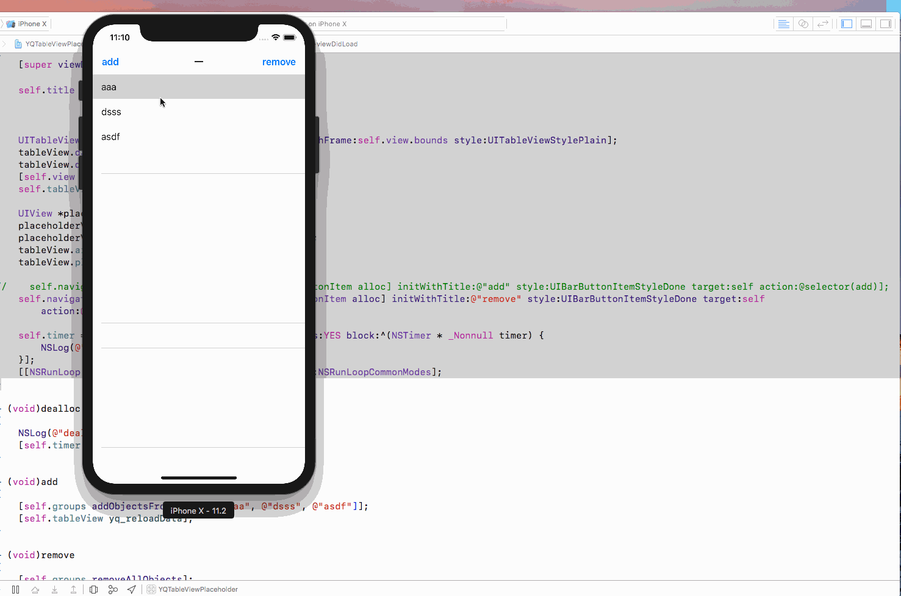

前言
本文是我看了使用-blockable–NSTimer-避免内存泄漏后，有了些思考和感悟，打算写下来。而这篇文章本应该写在17年末，但是由于公司项目以及个人有点懒的原因，拖到了现在。
本文的主要内容就如题目，通过分析NSTimer对象的引用计数来正确使用他，从而避免出现target循环引用或者timer未销毁问题。
正文
抛出问题
先看最简单的使用方法，很普通的代码，创建timer然后加入到runloop中，同时还抓住了NSRunLoopCommonModes这个细节，即使滑动滚动视图，也不影响timer的使用。1
2self.timer = [NSTimer timerWithTimeInterval:1 target:self selector:@selector(add) userInfo:nil repeats:YES];
[[NSRunLoop mainRunLoop] addTimer:self.timer forMode:NSRunLoopCommonModes];
分析一下timer的引用计数。首先需要说明一下，这里的timer属性是self强引用的。很显然，self强引用timer，timer强引用self，同时在将timer加入到runloop中后，runloop也强引用了timer。本质上，这时的timer的引用计数是2。
这个时候，已经造成了self和timer的循环引用。破除循环引用的方法也很简单，主动调用[self.timer invalidate];。这里需要注意的是，该方法决不能在- (void)dealloc中调用，因为循环引用根本进不去。所以很多时候，如果target是控制器，都会在- (void)viewDidDisappear:(BOOL)animated方法中去销毁。
再分析一下当销毁timer后的引用情况。timer将不再强引用self，runloop也断掉了timer的强引用。此时timer只有target持有，引用计数为1。不存在循环引用问题，target能被销毁，target销毁的同时timer也会被销毁。没有问题了。
貌似这样子已经能解决很多问题了。但是，如果target不是控制器呢，如果是一个自定义视图呢，该如何去停止timer。这确实是一个很伤脑筋的问题。
解决方案
其实苹果已经给了我们答案了。1
+ (NSTimer *)timerWithTimeInterval:(NSTimeInterval)interval repeats:(BOOL)repeats block:(void (^)(NSTimer *timer))block API_AVAILABLE(macosx(10.12), ios(10.0), watchos(3.0), tvos(10.0));
使用block来避免循环引用。这是一个很好的解决方案，但是，这个苹果的API方法只是适用于ios(10.0)及以后。因此，在ios(10.0)之前，还得我们自己搞定。
既然思路已经有了，就可以试着自己写block来避免循环引用。
下面的代码来自使用-blockable–NSTimer-避免内存泄漏1
2
3
4
5
6
7
8
9
10
11
12
13
14
15
16
17
18@implementation NSTimer (GSBlockable)
+ (NSTimer *)gs_scheduledTimerWithTimeInterval:(NSTimeInterval)interval repeats:(BOOL)repeats block:(void (^)(NSTimer * _Nonnull))block
{
if ([UIDevice currentDevice].systemVersion.doubleValue <= 10.0) {
return [self scheduledTimerWithTimeInterval:interval target:self selector:@selector(gs_timerTick:) userInfo:[block copy] repeats:repeats];
} else {
return [self scheduledTimerWithTimeInterval:interval repeats:repeats block:block];
}
}
+ (void)gs_timerTick:(NSTimer *)timer {
void (^block)(NSTimer *) = timer.userInfo;
!block ?: block(timer);
}
@end
继续分析一下这个分类方法的作用以及使用后的引用计数问题：
在调用该类方法后，self强引用timer，timer持有block，block中使用到的self如果用__weak修饰的话，block将不再强引用self，也就是打破了循环引用。这样便会调用self的- (void)dealloc方法，[self.timer invalidate];就有了好的调用位置了。
使用
1 | - (void)viewDidLoad |

注意block内部如果使用self，需要__weak修饰，否则仍然存在循环引用导致不会进入- (void)dealloc从而释放不了self和timer。（我是不是有点婆婆妈妈 ( ・◇・)）